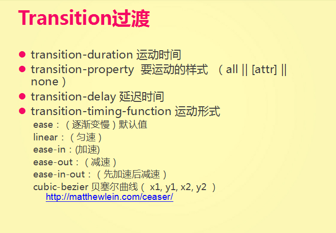
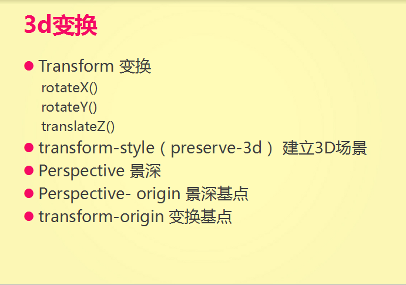

1、js中的with()语句
1）简要说明
with 语句可以方便地用来引用某个特定对象中已有的属性，但是不能用来给对象添加属性。要给对象创建新的属性，必须明确地引用该对象。
2）语法格式
with(object instance)
{
//代码块
}
有时候，我在一个程序代码中，多次需要使用某对象的属性或方法，照以前的写法，都是通过:对象.属性或者对象.方法这样的方式来分别获得该对象的属性和方法，着实有点麻烦，学习了with语句后，可以通过类似如下的方式来实现：
with(objInstance)
{
var str = 属性1;
.....
} 去除了多次写对象名的麻烦。
3）举例
function Lakers() {
this.name = "kobe bryant";
this.age = "28";
this.gender = "boy";
}
var people=new Lakers();
with(people)
{
var str = "姓名: " + name + "
";
str += "年龄：" + age + "
";
str += "性别：" + gender;
document.write(str);
}
代码执行效果如下:
姓名: kobe bryant
年龄：28
性别：boy
2,nth-of-type() 选择器 规定属于其父元素的第二个 p 元素的每个 p：--->p:nth-of-type(2)
nth-child(n) 选择器匹配属于其父元素的第 N 个子元素，不论元素的类型。

